Linux 时间子系统为构建分时多任务操作系统提供了基础设施，使得系统能够准确地管理和处理与时间相关的任务，为任务调度、资源管理、驱动开发和应用程序开发等等都提供了强大的支撑。魅族博客之前也介绍过时间相关的文章：《Linux Time》、《Linux Tick 和 Tickless》、《CPUIDLE 之低功耗定时器》，温故而知新，我们再来一篇从入门到放弃。
1. 整体软件架构
linux时间子系统从功能上分为定时和计时，定时用于定时触发中断事件，计时则用于记录现实世界的时间线。其软件架构示意图如下：

定时部分，系统有一个全局计数器counter，每个cpu核心有一个硬件定时器timer。定时器内部有比较器，当设定值达到全局计数器值就触发中断。每cpu定时器timer在软件上被抽象成时钟事件设备(Clock event device)，在高精度版本，每个Clock event device创建一个本地高精度定时器hrtimer管理结构。hrtimer基于事件触发，通过红黑树来管理该cpu上的各种类型软件定时任务，每次执行完超期任务，都会选取超期时间最近的定时任务来设定下次超期值。基于hrtimer还封装了各种类型和精度的软件定时器，为了方便内核使用，定义了节拍定时器(sched_timer)作为系统心跳来驱动任务调度、负载计算、以及其他基于timer wheel的低精度定时器。为了方便用户空间使用，定义了posix-timer、alarm、timer_fd、nanosleep、itimer等定时器接口。
计时部分，全局计数器counter在软件上被抽象成时钟源设备ClockSource device，其特点是计数频率高精度高，而且不休眠，通过寄存器可以高效地读出其计数值。timekeeping作为linux计时维护的核心，由counter提供持续不断的高精度计时，由RTC或者网络NTP提供真实世界时间基准，来维护各种系统时间的精准可靠。timekeeping除了给内核模块提供丰富的获取时间接口，也封装了很多系统调用给用户空间使用，特别地还通过VDSO技术绕过系统调用使用户空间高效地获取系统时间。另外任务调度模块(sched)，printk/ftrace时间戳等也依赖计数器counter提供高精度计时。
2 定时器和时钟源初始化
armv8文档《Architecture Reference Manual ARMv8, for ARMv8-A architecture profile》描述了关于定时器和时钟源的示例结构图如下。其中System counter是全局计数器，位于Always-powered域，保证系统休眠期也能正确计数。Timer_x是cpu本地定时器，每个执行单元(PE)至少有一个专属定时器。所有本地定时器都以System counter作为时钟源，共享全局计数器的计数值，以保证时间同步。本地定时器通过中断控制器，向cpu发起PPI私有中断。
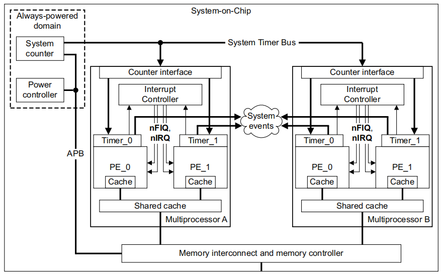
2.1 解析dts
以qcom 8核armv8的SOC为例，把cpu本地定时器称为arch_timer，全局计数器System counter不需要专门的dts节点，配置如下:
1 | arch_timer: timer { |
- 匹配字符串：”arm,armv8-timer”
- interrupts：4组PPI私有外设中断，对应4个软件中断号，实际只会选择其一。8个cpu共用同一个中断号，但会各自产生中断。
- clock-frequency： 时钟源计数频率19200000Hz = 19.2MHz
- always-on：计数器常开不休眠
出于虚拟化及安全执行等级考虑，armv8为每个cpu核心提供至少下面4种定时器用于不同的执行环境
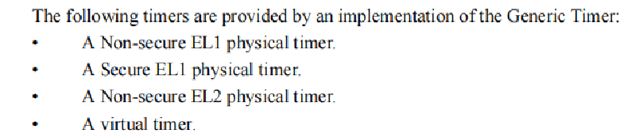
4种定时器与dts中的对应关系如下：
软件中断号13： ARCH_TIMER_PHYS_SECURE_PPI，安全世界物理定时器私有中断，Secure EL1 physical timer
软件中断号14：ARCH_TIMER_PHYS_NONSECURE_PPI，非安全世界物理定时器私有中断，Non-secure EL1 physical timer
软件中断号11：ARCH_TIMER_VIRT_PPI，虚拟定时器私有中断，vitual timer
软件中断号12：ARCH_TIMER_HYP_PPI，hypervisor定时器私有中断，Non-secure EL2 physical timer
虚拟定时器和物理定时器的差别在于，虚拟定时器的System counter计数输入会在实际System counter基础上添加一个偏移量，这个偏移量由host控制，来实现不同guest的无感切换。
一般外设中断都是dts配置硬件中断号，然后软件映射到一个软件中断号，最后用软件中断号向系统注册中断，这里dts配置的直接就是软件中断号，因为linux中断系统中为SGI和PPI预留有专用软件中断号。
上面配置的定时器，cpu可以通过cp15协处理器来访问定时器寄存器，称为cp15类型定时器。arm还提供一种内存映射方式访问的定时器，称为内存映射定时器(Memory Map Timer)，是将定时器寄存器映射到io区域，注册在系统中的名称为 “arch_mem_timer”，主要为了没有协处理器的版本使用。
2.2 本地定时器初始化
初始化代码跟具体的体系架构有关，arm初始化代码在drivers/clocksource/arm_arch_timer.c中，初始化代码中添加下面的声明，通过一个简洁的TIMER_OF_DECLARE()宏，将dts匹配字符串和初始化函数静态绑定到一个表中，
TIMER_OF_DECLARE(armv8_arch_timer, “arm,armv8-timer”, arch_timer_of_init);
在内核初始化流中路径如下：
1 | start_kernel |
总结起来就是根据dts配置和linux运行模式，来选择注册对应中断和选择寄存器，来初始化arch_timer的一些功能函数指针，并最终向系统注册ClockEvent device。
从开机0s的log中看到arch_timer的初始化情况，初始化了cp15和mmio 2种定时器，时钟频率都是19.2MHz，都是虚拟的timer。系统启动早期只初始化cpu0的arch_timer，然后通过cpuhp_setup_state()设置了热插拔cpu时的注册和注销定时器函数，随着后续多核的启动以及下线，其他cpu的arch_timer也会陆续初始化注册或注销。
1 | [ 0.000000] arch_timer: cp15 and mmio timer(s) running at 19.20MHz (virt/virt). |
运行时查看当前系统的ClockEvent device，一个内存映射定时器arch_mem_timer和8个本地定时器arch_sys_timer
1 | adb shell head /sys/devices/system/clockevents/*/current_device |
通过cat /proc/interrupts查看中断计数，arch_timer中断触发频率非常高，仅次于2个高频的IPI中断，可见其重要性。软件IRQ号11，对应dts中的第3个ARCH_TIMER_VIRT_PPI，硬件中断号27。
1 | IRQ CPU0 CPU1 CPU2 CPU3 CPU4 CPU5 CPU6 CPU7 |
2.3 时钟源clockSource初始化
初始化完定时器arch_timer，接下来就会初始化时钟源，arm上称为arch_counter，通过clocksource结构体描述，成员初值如下：
1 | static struct clocksource clocksource_counter = { |
.name = “arch_sys_counter”，时钟源名称为”arch_sys_counter”
.rating = 400表示其精度很高，是理想的时钟源
.mask = CLOCKSOURCE_MASK(56)，56位有效bit
.flags = CLOCK_SOURCE_IS_CONTINUOUS，连续计数
软件初始化过程如下
1 | arch_timer_of_init()； |
arch_counter功能相对简单，只需要一个读寄存器函数arch_timer_read_counter，最终会内嵌汇编语句，读cntvct_el0寄存器来读出计数值。cntvct_el0寄存器命名以el0结尾，表明一定条件下可以用户态也可以访问该寄存器，这一点结合vdso技术可以实现用户空间中高效读取系统时间。
1 | u64 (*arch_timer_read_counter)(void) __ro_after_init = arch_counter_get_cntvct; |
从开机log看出，创建了一个clocksource，名为arch_sys_counter，mask: 0xffffffffffffff表示56位有效位数，然后注册了sched_clock，56bit有效位，19MHz频率，分辨率52ns。系统还有一个jiffies时钟源，但是精度太低了，最后系统选择arch_sys_counter作为clocksource device
1 | [ 0.000000] clocksource: arch_sys_counter: mask: 0xffffffffffffff max_cycles: 0x46d987e47, max_idle_ns: 440795202767 ns |
运行时查看当前时钟源为arch_sys_counter
1 | adb shell cat /sys/devices/system/clocksource/clocksource0/current_clocksource |
3 timekeeping
3.1 时间类型及接口
timekeeping时间维护层主要负责维护以下几种类型的时间，其中jiffies由节拍定时器累计，本不属于timekeeping模块，也列出来对比：
| 时间类型 | 宏定义 | 时间基准 | 特性 | 使用场景 |
| 真实时间/ 墙上时间 |
CLOCK_REALTIME | 1970年1月1日0时 | 世界标准时间(UTC) | 用户时间/安卓log时间戳/网络传输 |
| 单调时间 | CLOCK_MONOTONIC | 系统启动 | 系统uptime，单调增加，休眠不会增加，可能受NTP影响 | 定时器、内核log时间戳 |
| 原始单调时间 | CLOCK_MONOTONIC_RAW | 系统启动 | 系统uptime，单调增加，休眠不会增加，不受NTP影响 | 很少用 |
| 启动时间 | CLOCK_BOOTTIME | 系统启动 | 系统上电时间，单调增加，休眠也会增加 | ftrace时间戳 |
| 原子时间 | CLOCK_TAI | 1970年1月1日0时 | 表示原子国际时间(TAI) | 很少用 |
| 节拍计数 | jiffies | 系统启动 | 系统节拍累计计数，休眠不会增加 | 低精度时间计时 |
timekeeping管理的数据结构，变量关系交织比较杂乱，大致整理了如下简化的软件框图。维护主时间基数base，每个节拍定时器周期都会读取全局计数器的值来更新base。各种类型时间有一个相对该base的offset值，其中单调时间offset为0。这里的base并不是上表中的时间基准，而是上一次节拍定时器触发时的时间值。正常情况下只需要更新base，保持offset不变，就能使各种时间齐步走。除非一些修改特定时间的时机，例如RTC驱动或者用户空间通过settimeofday来更新实时时间，此时只需要计算更新真实时间和原子时间的offset。再例如系统休眠后，系统节拍停止，由于单调时间和原始单调时间不包含休眠时间，其他时间都包含休眠时间，所以需要更新部分时间的offset。全局计数器是不休眠的，所以根据唤醒后计数器的值与休眠前的差值，将休眠的时间补偿到offs_real、offs_boot、offs_tai上，以维持其正确性。
由于tick节拍触发频率相对较低，如果CONFIG_HZ=250，则每4ms触发一次，也就是base每4ms更新一次。如果获取的系统时间是base+offset，精度也就只有4ms，显然不够。所以在真正获取系统时间时，会重新读取时钟源的counter值，并计算出与base的差值时间ns_delta，补偿上ns_delta来获最终高精度的系统时间。
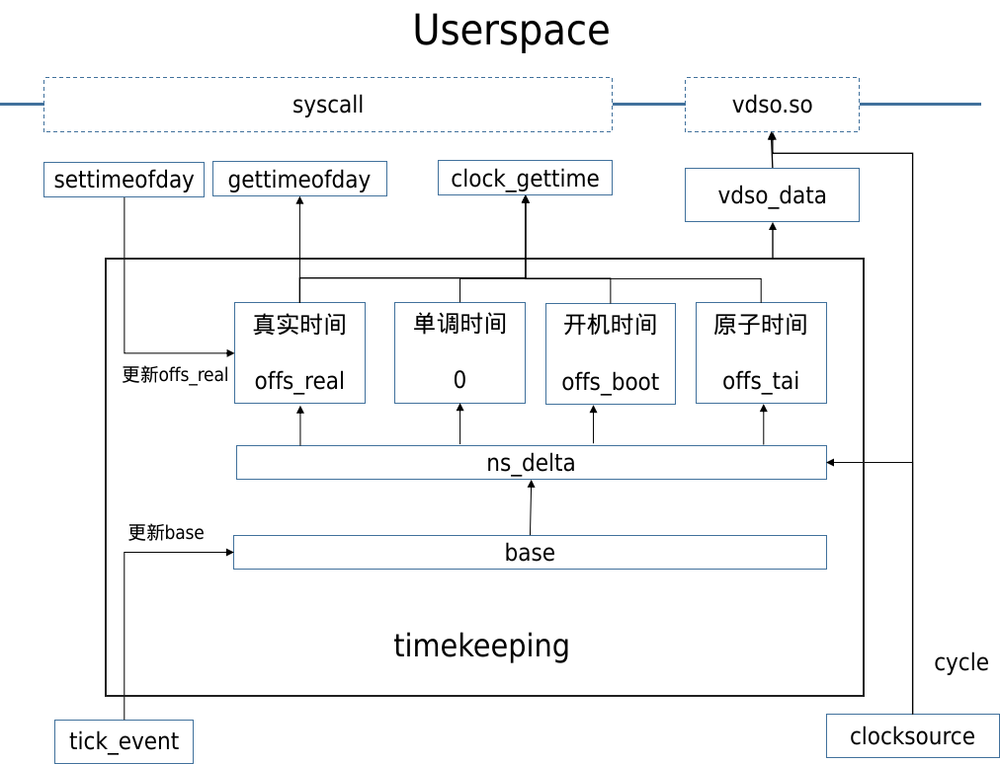
timekeeping时间格式有3种，timespec64、ktime_t和tm。timespec64用2个64位变量分别记录秒数tv_sec和剩余的纳秒数tv_nsec，ktime_t则是一个有符号的64位变量，记录总的纳秒数。timespec64和ktime_t转换关系很简单，但需要注意的是，这2个时间都表示从某个基准时间开始的累计值。在include/linux/ktime.h中提供了各种转换时间的函数和宏。
tm则是我们正常理解的日期时间，是一个包含年月日时分秒的结构体，精度是秒，通过time64_to_tm函数将累计秒数转换成日期时间
1 | struct timespec64 { |
timekeeping提供了各自接口来获取各种类型和格式的时间，主要从精度和速度上分为：
高精度版本：高精度版本会读取硬件计数器值来保证纳秒级精度，访问临界区时加顺序锁，精度最高，速度相对其他版本较慢；
低精度版本：低精度版本直接返回上次tick更新的base值，不涉及硬件操作，精度低，速度快；
高精度快速版本：相对于高精度版本区别在于访问临界区时加顺序锁类型不同，精度和速度都介于上两者。
下面是提供的内核接口函数，根据函数名和参数类型大致可以顾名思义，函数名以_ts64结尾的表示获取timespec64格式，函数名带_coarse表示低精度版本，带_fast_ns的表示高精度快速版本。
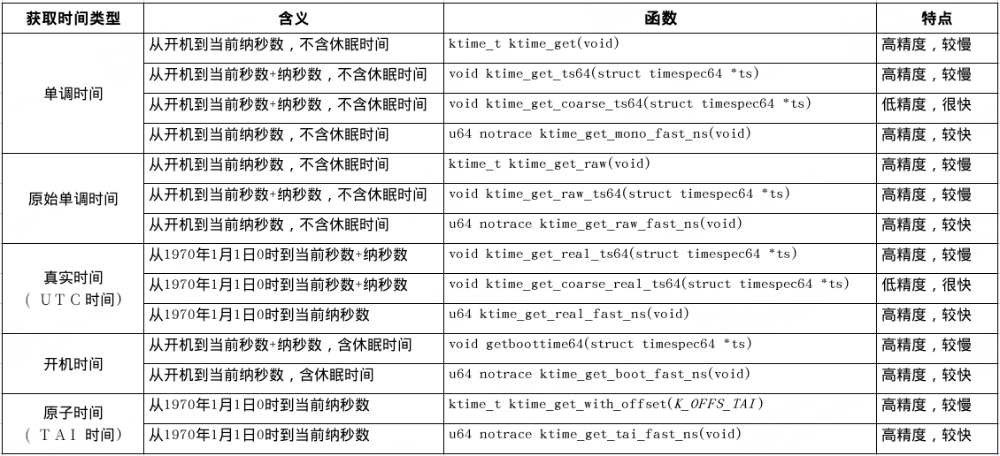
3.2 RTC时间管理
RTC是实时时钟，在系统下电后依赖CMOS电池保持计时功能，系统上电后再把RTC时间读出来，可以保持开机后时间正确。RTC虽然很重要，但毕竟是外设，timekeeping作为必要内核组件没有将RTC驱动纳入其中，所以开机后需要RTC驱动通过timekeeping提供的do_settimeofday64接口来更新时间。RTC相关开机log如下，rtc-pm8xxx驱动初始化后，设置了系统时间为1970-02-26T17:12:04 UTC (4900324)。
1 | [ 0.250020] rtc-pm8xxx c42d000.qcom,spmi:qcom,pmk8550@0:rtc@6100: registered as rtc0 |
不同设备在RTC功能的实现逻辑不同，有的系统会在联网后或设置时间时将新时间回写到RTC中，而有的系统则把RTC当做不断计时的只读设备，然后在系统用户文件中维护一个偏移量，每次更新时间只修改文件中的偏移量。这样的好处一方面是避免对RTC的写操作可能导致的数据破坏，另一方面也是方便对多用户系统差异时间管理，只需要维护各自用户的文件时间偏移量。下图是高通手机设备ATS时间管理机制流程框图，RTC只作为一个只读设备，在其生产出厂后从0秒(1970年1月1日0时)开始计时且不被干扰。开机联网后，安卓侧从互联网更新时间，并通过广播通知TimeService(高通时间服务)，TimeService计算最新时间与RTC的偏移量offset给到time_daemon进程，time_daemon将时间偏移量offset写到用户文件。下次开机time_daemon读出RTC值和文件中的offset，相加后通过settimeofday设置到kernel和其他子系统。
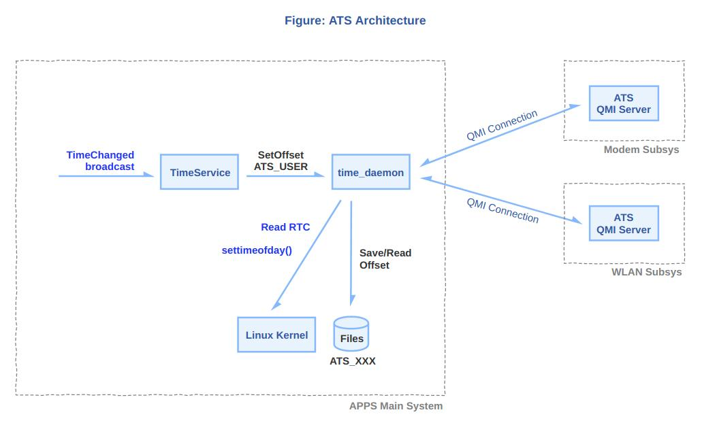
3.3 内核时间戳
内核中依赖时间戳的模块，例如printk、ftrace等，根据各自的需要选择不同的时间获取方式。
根据printk的调用路径，printk并没有使用timekeeping的时间接口，而是使用调度模块的接口sched_clock()，sched_clock直接使用时钟源的arch_counter_read()接口读取计数器寄存器值，来转换成时间戳。由此可知，printk的时间戳即使系统休眠也会累计。
1 | _printk()->vprintk()-> vprintk_default()->vprintk_emit()->vprintk_store()- |
ftrace依赖timekeeping，通过sys节点可以看到ftrace可以使用的时间戳类型，默认使用boot开机时间作为时间戳，可以echo修改
1 | cat /sys/kernel/tracing/trace_clock |
3.4 vdso系统调用加速
用户态有很多进程需要频繁地获取系统高精度时间戳，如日志系统，如果每次都陷入内核通过timekeeping提供的系统调用来获取时间，损耗会非常大。VDSO（Virtual Dynamic Shared Object）是Linux内核提供的一种特殊机制，它可以让用户空间的程序在不切换到内核态的情况下，直接访问一些内核函数和数据，避免高频地系统调用，提高性能。vdso是一个冷门且复杂的技术，涉及内存共享和elf加载原理，这里不做深入讨论，只简单说明其用意。
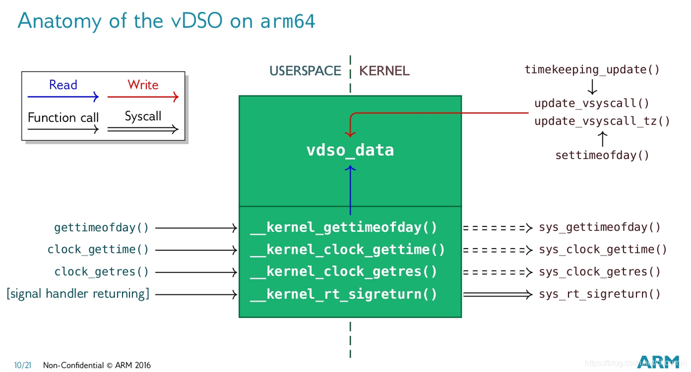
vdso目前主要应用在用户空间获取时间的接口上，将内核timekeeping中维护的一些时间数据，在vdso.so上创建一个vdso_data副本，内核会加载映射这个so，并获取其中的vdso_data指针，每个节拍更新时间也会同步更新这个副本。每个进程加载时也会将vdso.so映射到自己的地址空间，保证内核和所有进程都是用的同一份副本，进程只需要通过libc提供的接口获取vdso_data内存中的数据，而不需要系统调用。但是vdso_data是每次tick更新的，精度不够，用户进程想获取到ns级高精度的时间，还需要时钟源计数器的值，好在用户态也可以读时钟源寄存器值，以此来获取高精度部分。vdso中的代码实质上还是执行用户态，没有进入内核，所以效率高。
vdso整个执行过程代码调用流程如下：
1 | gettimeofday // libc接口 |
__arch_get_hw_counter同2.3节中内核函数__arch_counter_get_cntvct，都是通过相同汇编语句读cntvct_el0系统计数器值。经过一些配置后，用户态可以直接访问cntvct_el0寄存器，也就保证了获取时间的精度
1 | static __always_inline u64 __arch_get_hw_counter(s32 clock_mode,70 const struct vdso_data *vd) |
linux-vdso.so.1这个库不依赖其他库，并且会被系统绝大部分so依赖，包括libc.so，非常有牌面。所有用户进程都会映射vdso到自己的地址空间。
1 | adb shell ldd /system/lib64/libc.so |
3.5 NTP对时
NTP(Network Time Protocol)是一种用于在计算机网络中同步时间的协议，客户端通过NTP报文向服务端发送对时请求，服务端处理完后回应报文，通信过程非常简洁。NTP对时并不是简单的从服务端获得一个时间，然后同步到本地，还要考虑报文传输时间，服务器响应时间。核心原理如下，细节的地方省略掉。
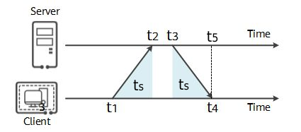
客户端发送请求报文D(t1)附带当前本地时间戳t1，服务端在t2时刻收到报文，并记录服务器接收时间戳t2，服务端在t3时刻处理完报文并正式发送回应报文D(t1,t2,t3)，客户端在本地t4时间收到报文D(t1,t2,t3)并添加t4得到D(t1,t2,t3,t4)。一次对时通信过程完毕，接下来需要根据报文D(t1,t2,t3,t4)计算出一个准确时间来更新本地时间。这里有1个假设前提，就是来回报文的传输时间ts相同。所以客户端需要计算的时间其实是t4时刻，服务器的时间t5。t5=t3+ts，t3已知，只需要计算ts。由于t1和t4都是本地时间戳，t2和t3是服务器时间戳，两种时间戳不能直接相减。可以通过下面的公式计算ts，由此可以得到t5
4 高精度定时器hrtimer
从最早的嵌入式设备到大型计算机系统，定时器都是必备的模块。随着各种硬件的升级，linux上的定时器软件也在不断变化，这里不去过多追溯历史版本和兼容情况，以当前linux 6.1版本arm64安卓设备为例做介绍。
在有高精度计数器的linux设备中，会开启高精度定时器hrtimer。在多核架构中，每个cpu都有一个本地硬件定时器，软件上也会创建对应的ClockEvent device，hrtimer层也会对应绑定一个hrtimer_cpu_base结构，利用对应ClockEvent模块来操控定时器硬件，实现定时功能。出于性能考虑，每个cpu上都会创建自己专属的软件定时任务，最典型的是schedule tick timer等，但是每个cpu定时器硬件只有一个，无法同时设置多个定时值。hrtimer通过红黑树来管理该cpu上所有的定时任务，对任务的超期的时间进行排名，每次选择最左边(最早超期)的任务去设置定时器值，定时器触发后，然后再选择最左边的任务继续设定下次超时值。也就是说hrtimer是一次触发的，对于一些周期性的任务，在触发一次后更新超时值，以改变在红黑树中的位置重新去竞争。
4.1 hrtimer初始化
1 | void __init hrtimers_init(void) |
hrtimer层初始化在start_kernel() -> hrtimers_init()->hrtimers_prepare_cpu(0)中，首先初始化了cpu0的每cpu结构体hrtimer_cpu_base，用来管理当cpu0上所有的软件定时器。每个hrtimer_cpu_base根据4种时间类型和2种中断执行环境，分为8种clock_base来分别管理。2种中断执行环境是指定时器任务在硬中断上下文还是软中断上下文执行，可以在创建定时任务时指定。借用https://zhuanlan.zhihu.com/p/450089796中的结构图，每个clock_base对应一棵红黑树，对于8核处理器总共有8*8=64棵hrtimer红黑树
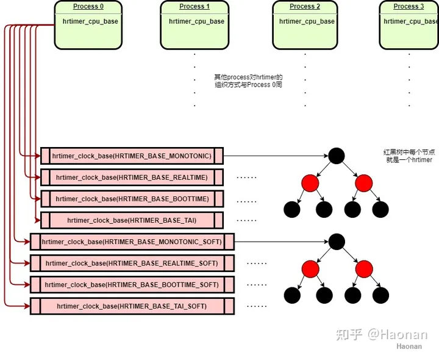
在定时器中断到来时进入硬中断处理函数hrtimer_interrupt()，如果最近到期的任务是硬timer，则继续在当前中断环境下处理。如果是软timer，则挂起软中断HRTIMER_SOFTIRQ，软中断在hrtimer_run_softirq()中处理软timer任务。
hrtimers_init()只初始化cpu0的hrtimer，如cpuhp_hp_states结构体数组中列出的热插拔相关模块，其他cpu会在各自启动时调用hrtimers_prepare_cpu()初始化自己的hrtimer_cpu_base，在cpu下线时调用hrtimers_dead_cpu()将该cpu上的定时任务迁移到别的cpu。
1 | static struct cpuhp_step cpuhp_hp_states[] = { |
4.2 hrtimer的使用
在内核中直接使用hrtimer示例代码如下，每8.3ms周期性触发并打印log。
1 | static struct hrtimer timer; //创建hrtimer定时器 |
4.3 sched_timer
早期linux使用低精度定时器timer，代码位于kernel/time/timer.c中，虽然精度比较低，但是很多内核定时触发代码都是在这个基础上搭建的，例如调度、时间更新、各种低精度定时任务。在高精度时钟模式下，内核仍然需要周期性的tick中断，以便刷新内核的一些任务，所以仍然保留了低精度timer的角色和运作模式，通过hrtimer模拟出原本的timer，称之为sched_timer，将其超时时间设置为一个tick时长，在超时回来后，完成对应的工作，然后再次设置下一个tick的超时时间，以此达到周期性tick中断的需求。
sched_timer触发频率为CONFIG_HZ，在CONFIG_HZ=250的系统中，每4ms触发一次，也就是一个jiffies时间间隔。虽然触发时间粒度比较大，但是精度仍然是纳秒级，属于高精度定时器。
其初始化入口为
1 | start_kernel() |
hrtimer切换到高精度模式时，如下
1 | hrtimer_switch_to_hres(void) |
sched_timer定时器中断处理程序内容如下，sched_timer此时就是系统节拍定时器，不仅给调度程序提供心跳，更新jiffies，还充当了一个管理者，以jiffies时间精度给内核其他程序提供定时服务。原有的timer的功能接口，如timer_setup()、add_timer()以及其经典的time wheel方式被保留，继续给内核中其他程序提供定时服务。
1 | tick_sched_timer(struct hrtimer *timer） |
5 低精度定时器timer
5.1 timer wheel
系统中可能有成千上万个低精度定时器，为了在tick到来时快速查找超期的timer，以及插入是快速找到正确的插入点，linux设计了时间轮(timer wheel)的管理方式。每个cpu都有至少一个timer_base结构管理当前cpu上的低精度定时器，有BASE_STD和BASE_DEF两种类型，前者是标准定时器必须存在，后者表示可延时定时器，当配置了NO_HZ模式，才会有BASE_DEF。每个timer_base通过64*9=576个桶(bucket)来记录所有定时器，下图中的数字是桶编号，而非时间。这个排列不是线性的，而是每隔64个桶，设定一个等级(level)，随着level升高，相邻2个桶之间的时间差值也越来越大。例如level 0中每个桶之间间隔时间为1个tick，level 1为8个tick，level2为8*8=64个。相邻2桶差值越大，意味着插入定时器时，多个时间将会被折叠到同一个桶中，时间精度也就越低，同一个桶将在同一时间被触发执行。
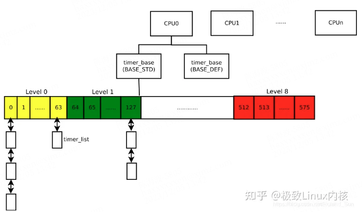
经过多个版本迭代，在目前6.1版本上，查找和插入的已经达到了O(1)的复杂度，非常高效，但是高效是通过牺牲精度换来的。插入定时器时，timer wheel根据超期时间(expires)距离当前的时间长短，分为不同等级(level)的时间轮中。如下表中HZ=250配置下的粒度(精度的倒数)及定时范围表，距离当前时间越久的任务会被放置到level越高的时间轮，精度牺牲也越大。选择好level后，再根据超期绝对时间expires，将该定时器散列到所选level中的64个桶之一，来确定桶编号。在每tick查找超期定时器时，由于level=0粒度为1 tick，所以在每个tick时都会查找level 0时间轮有没有超期；level 1粒度为8 ticks，每8个tick才会查找level=1有没有超期，以此类推，每64个tick查找level 2。
例如想定时在4097个tick(16.388s)后触发，该任务将会被加入到level=3的时间轮中，会在(4097+511)=4608 tick时触发该定时器，这就意味着比原定时时间整整晚了2.044s。牺牲这部分精度，保证了查找的效率，这是权衡的结果，毕竟定时时间越长往往意味着对精度的要求越低。如果定时时间刚好是该level粒度的整数倍，例如4096、4608都为level=3粒度512的整数倍，那么将不会有精度损失。
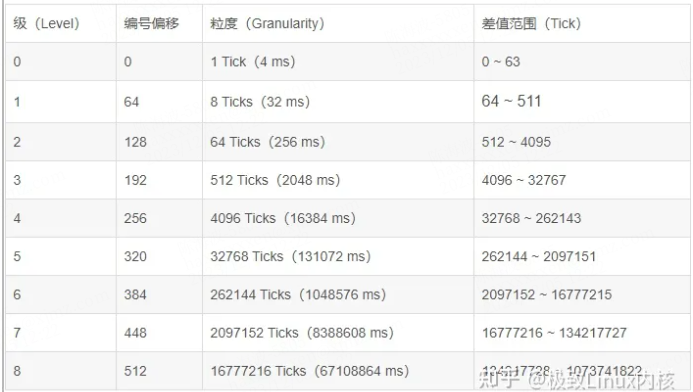
为了严谨，写一个测试程序定时4097个ticks，然后超时触发时打印当前与上次触发的jiffies时间差，发现log打印时间间隔确实为4608。
1 | static struct timer_list low_timer; |
首先看插入定时器逻辑，从add_timer开始，假设已经初始化完成了struct timer_list结构体的expires超时时间(绝对jiffies)和处理函数。核心是calc_index函数，根据超期绝对时间expires，当前时间clk，计算出将要插入的桶以及这个桶对应的绝对超时时间bucket_expiry。idx表示将要插入的桶编号，而桶超时时间bucket_expiry，受level精度的影响，是定时器超时时间expires对粒度向上取整对齐。
根据相对时间(expires - clk)确定level，然后对expires按照level精度向上取整得到bucket_expiry。idx计算比较难理解，以level=1举例，expires/8得到当前level粒度的倍数，然后对64取余抹除不相关的高位，得到在level 1中的位置偏移量，然后加上level 1的初始偏移64得到最终的idx。之所以这样做是为了查找方便，查找时根据expires可以方便的找出idx。得到idx和bucket_expiry，就将该定时器插入到idx对应的桶链表中，并将桶到期时间更新为bucket_expiry，然后将idx对应的pending_map位置1，完成定时器插入。idx和bucket_expiry计算都是O(1)，链表插入也是O(1)。
1 | add_timer(struct timer_list *timer)； |
下面是定时器查找过程，也就是到达某个tick时，应该如何判断哪些定时器超时。处理流程从run_local_timers开始，也就是sched_timer定时处理事务中的一环。run_local_timers不会直接处理定时器任务，而是发起软中断TIMER_SOFTIRQ，处理函数为run_timer_softirq来处理当前cpu的定时器任务。核心函数是collect_expired_timers，该函数查找出所有超时的定时器。
1 | run_local_timers |
collect_expired_timers会根据当前时间clk从level 0开始逐级查找，是否查找当前level的判断标准是clk是否为8^level的倍数。level 0必然会被查找到，查找的idx为clk对64取余忽略掉高于6bit的所有位，得到0~63的编号，然后看该idx的pending_map是否置位(是否有定时器)，如果有就加入到待处理链表heads。level0处理完后，判断clk如果不是8的倍数，也就更不可能是64等更高的倍数，所以直接退出查找过程；如果clk是8的倍数，则让clk=clk/8，然后按照level 0的方式查找level1，依次类推。每个level最多查找1次，共9个level，时间复杂度O1。
1 | static int collect_expired_timers(struct timer_base *base, |
下面举一个例子说明timer whell工作过程，假设当前时间clk=100 jiffies。此时添加2个定时器，超时时间分别为162，164，delta分别为62，64，根据add_timer逻辑，2个定时器会被分别添加到level 0和level1对应的桶中。其中162的实际超时时间为162，164的实际超时时间为168。
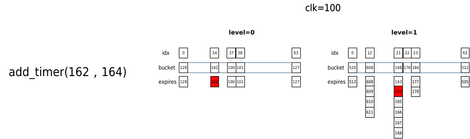
当时间进行到clk=150时，再次添加同样的超时时间为164的定时器，由于此时的delta时间为164-150=14，所以添加到level 0中idx为(164%64)=36桶中，
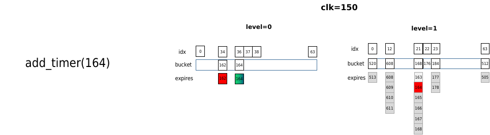
当时间到clk=164时，查找命中level 0中164，所以直接处理。由于level 1中的164实际超时时间为168，并没有得到处理。
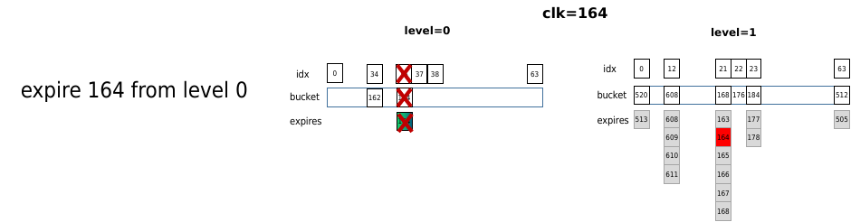
当时间来到clk=168时，为8的倍数，查找level 1中168桶，其中的定时器全部移除，包括之前插入的164。可见先插入的164实际执行晚于后插入的164，因为其插入是delta较大，被安排到更低精度的level中
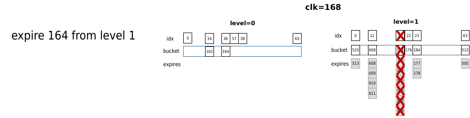
5.2 使用实例watchdog timer
Watchdog timer分为硬件看门狗和软件喂狗定时器，如果linux运行在虚拟机中，硬件看门狗定时器被host主机管理，linux通过smc调用与host通信来设置硬件看门狗bark/bite时间。linux上创建watchdog线程，并以最高优先级prio=0调度。通过软件sched_timer低精度定时器创建定时任务，每隔pet时间触发一次。当喂狗时间到期(expires)，watchdog线程通过smp_call_function_single ping其他cpu，也就是向其他cpu发送函数调用中断(Function call interrupts，IPI核间中断之一)，并等待其全部返回，如果全部返回，说明所有cpu正常响应中断，于是通过smc调用到host给清除硬件看门狗计数。然后watchdog线程通过软件定时器设置下次喂狗时间，如此往复。另外，喂狗时间配置为15.360s，也就是3840个ticks(HZ=250)，根据时间轮的算法，3840位于level 2且正好是精度64tick的整数倍，这可以将精度损失降到最小。
但是如果某个cpu长时间关闭中断，无法响应IPI请求，watchdog线程阻塞无法去喂狗，host的看门狗计数超过bark时间，会向linux发送bark中断触发panic。如果到bite时间，host会向TZ发送FIQ中断来拉低PS_HOLD进入ramdump，主要是防止linux上所有cpu都无法响应，无法触发panic的情况。
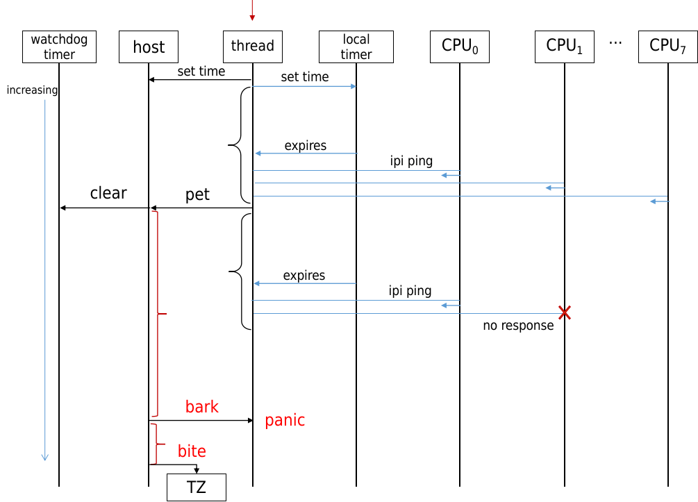
6 用户态定时器API
6.1 nanosleep
nanosleep基于hrtimer来实现纳秒级延时，内核中提供hrtimer_nanosleep接口，并且封装成系统调用nanosleep给用户空间使用。其核心是do_nanosleep，会将线程设置为TASK_INTERRUPTIBLE|TASK_FREEZABLE状态，然后调度出去，当定时时间到期后，定时器中断唤醒该task。从2.3时钟源精度52ns就可以看出，在加上这里会有任务调度，和代码执行耗时，真想实现ns级延时是不现实的，微秒级应该是可以的。
1 | static int __sched do_nanosleep(struct hrtimer_sleeper *t, enum hrtimer_mode mode) |
6.2 itimer
itimer基于hrtimer和信号配合实现，通过hrtimer设置高精度超时时间，到期后通过信号方式通知进程。itimer提供下面三种定时方式，收到的信号也不同。
| 定时类型 | 含义 | 到期信号 |
| ITIMER_REAL | 真实时间 | SIGALRM |
| ITIMER_VIRTUAL | 当前进程在用户态实际执行时间 | SIGVTALRM |
| ITIMER_PROF | 当前进程在用户态和内核态实际执行时间 | SIGPROF |
如下signal_struct结构体定义中包含的定时器相关的成员，与itimer相关的有，real_timer是该线程对应真实时间hrtimer定时器，it[2]是2种cpu执行时间定时的cpu_itimer定时器。
1 | struct signal_struct { |
ITIMER_REAL是真实时间定时，也是最常规的，在线程被fork出来时，会在copy_signal中初始化real_timer，设置超时函数it_real_fn。在超时函数中发送SIGALRM给当前线程所属的进程tgid，所以同一个进程内，同时只能有一个线程使用ITIMER_REAL。
1 |
|
ITIMER_REAL使用示例
1 | include <unistd.h> |
对于另外2种cpu运行时间相关定时器，设置接口也是setitimer，但是clock类型选择ITIMER_VIRTUAL或者ITIMER_PROF。cpu timer实现方式比较复杂，流程是在tick事件处理时，通过run_posix_cpu_timers来检查cpu_timer，并向到期的timer发送对应的信号。
1 | run_posix_cpu_timers |
6.3 alarm
alarm基于itimer实现来定时，并且以秒为单位，时间到内核会给该进程发送SIGALRM信号。
1 | SYSCALL_DEFINE1(alarm, unsigned int, seconds) |
进程在调用alarm定时之前，需要设置SIGALRM信号的处理函数。参数很简单，只有一个秒，使用代码示例如下
1 | #include <stdio.h> |
6.4 Posix timer
Posix timer大大扩展了itimer的功能，一个进程可以同时创建任意个timer，并且可以指定到期信号。Posix timer封装了多个syscall接口：
创建定时器：timer_create
删除定时器：timer_delete
设置定时器时间：timer_settime
获取定时器剩余：timer_gettime
通过which_clock参数来区分使用哪种时间类型来计时，下面是支持的时间类型。此外还提供了clock_gettime()、clock_settime()、clock_adjtime()、clock_getres()系统调用来获取和设置各种类型时间信息，属于大一统的接口。
1 | static const struct k_clock * const posix_clocks[] = { |
6.5 timer_fd
timer_fd是一个基于文件描述符的定时器接口，精度为纳秒级，直接基于hrtimer实现。提供三个接口函数，通过文件描述符的可读事件进行超时通知。通过timerfd_create在内核创建一个定时器实例，并返回一个文件描述符fd，通过timerfd_settime(fd)设置超时时间。由于不是基于信号通知，进程需要通过select、poll、epoll等io机制，监听fd的事件，来实现异步事件通知。
1 | #include <sys/timerfd.h> |
以下是timer_fd的使用示例代码，每隔1s触发一次，每次触发都要重新设置，并且设置的时间都是绝对时间：
1 |
|
参考
https://kernel.meizu.com/2018/07/12//linux-time.html/
https://kernel.meizu.com/2016/07/20//linux-tick-and-tickless.html/
https://www.zhihu.com/question/271018947/answer/2146053897
http://t.csdnimg.cn/2HrYd
https://blog.csdn.net/flyingnosky/article/details/126310866
https://zhuanlan.zhihu.com/p/450089796
https://zhuanlan.zhihu.com/p/611286101
https://blog.csdn.net/weixin_43705457/article/details/124393182
This is copyright.